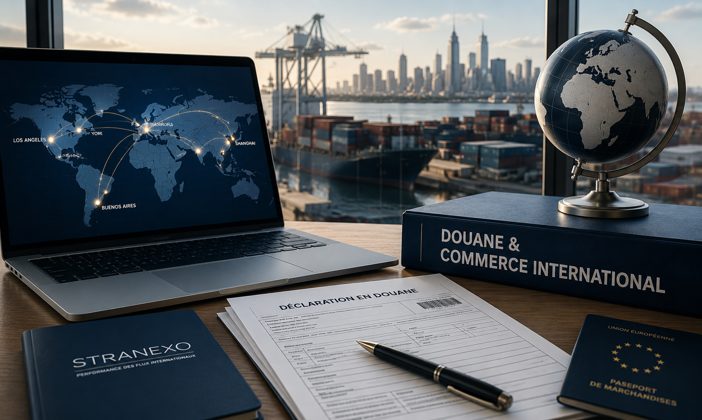

Sécurisez vos opérations internationales avant que les risques ne deviennent des coûts.
Douane & Commerce International pour PME et ETI
Les retards, les surcoûts et les litiges douaniers trouvent souvent leur origine bien avant la déclaration.
Un choix d'Incoterm, un fournisseur international, un classement tarifaire, une documentation incomplète ou une évolution réglementaire insuffisamment anticipée : prises isolément, ces décisions semblent anodines. Additionnées, elles peuvent fragiliser vos opérations internationales.
J'accompagne les PME et ETI dans l'identification et la maîtrise de ces risques afin de sécuriser durablement leurs opérations internationales.

Quand cette expertise devient-elle pertinente ?
Cette expertise prend tout son sens lorsque votre activité internationale évolue plus vite que vos pratiques.
Par exemple lorsque :
- vous développez de nouveaux marchés ;
- vous augmentez vos volumes import ou export ;
- plusieurs équipes interviennent sur vos opérations internationales ;
- les responsabilités entre vos fournisseurs, transporteurs et clients manquent de clarté ;
- vous constatez des retards, des blocages ou des coûts difficiles à expliquer ;
- vous souhaitez vérifier la robustesse de votre organisation avant qu'un contrôle ou un litige ne survienne.
Dans beaucoup d'entreprises, les difficultés ne proviennent pas d'une erreur unique.
Elles apparaissent lorsque plusieurs décisions prises dans différents services ne sont plus suffisamment coordonnées.
Ce que j'analyse
Chaque entreprise possède sa propre organisation.
Mon rôle consiste à comprendre comment les décisions prises dans les achats, la logistique, la Supply Chain, le commerce ou l'administration interagissent avec les exigences douanières.
Selon vos enjeux, j'analyse notamment :
- le classement tarifaire ;
- l'origine des marchandises ;
- la valeur en douane ;
- les Incoterms ;
- les documents import-export ;
- les procédures douanières ;
- les pratiques de vos fournisseurs ;
- l'organisation de vos flux internationaux.
L'objectif n'est pas de vérifier des formalités.
Il est d'identifier les situations susceptibles de générer des risques opérationnels, financiers ou réglementaires.
Accompagnements spécifiques
Certaines entreprises souhaitent structurer durablement leurs opérations internationales ou mettre en place des dispositifs adaptés à leur développement.
Je peux notamment vous accompagner dans :
- l'accompagnement à l'obtention du statut d'Exportateur Agréé ;
- l'étude de la faisabilité d'une zone MADT adaptée à votre organisation ;
- l'accompagnement de projets de dédouanement à domicile, en coordination avec les partenaires compétents ;
- l'analyse des opportunités offertes par certains régimes douaniers ;
- la montée en compétence de vos équipes sur les enjeux douaniers et réglementaires.
Les bénéfices pour votre entreprise
Une organisation mieux maîtrisée vous permet de :
- renforcer la conformité de vos opérations ;
- limiter les retards, les surcoûts et les litiges ;
- clarifier les responsabilités entre les différents acteurs ;
- améliorer la coordination entre les achats, la logistique, la Supply Chain et vos partenaires ;
- sécuriser votre développement international sur des bases solides.
Mon approche
Je privilégie une approche pragmatique, fondée sur votre réalité opérationnelle.
Je n'applique pas une méthode standardisée.
J'analyse votre organisation dans son ensemble afin d'identifier les décisions qui peuvent avoir des conséquences douanières, réglementaires ou opérationnelles.
À partir de cette analyse, je construis avec vos équipes un plan d'actions réaliste, priorisé et adapté à vos objectifs.
Je n'interviens pas en tant que représentant en douane.
Mon rôle est de vous apporter une vision d'ensemble, de sécuriser vos décisions et d'accompagner vos équipes dans la mise en œuvre des améliorations retenues.
Questions fréquentes
Réalisez-vous les déclarations douanières ?
Non.
J'interviens en tant que consultant. Les formalités déclaratives sont réalisées par les opérateurs habilités ou par vos partenaires spécialisés.
Cette expertise se limite-t-elle à la douane ?
Non.
Elle couvre également les Incoterms, les responsabilités contractuelles liées aux échanges internationaux, l'organisation documentaire, les pratiques fournisseurs et, plus largement, les décisions qui influencent la conformité et la sécurité de vos opérations.
Quelle est la différence avec l'Optimisation des Flux Internationaux ?
L'Optimisation des Flux Internationaux vise à améliorer la performance globale de vos flux.
Cette expertise vise à maîtriser les risques douaniers et réglementaires qui peuvent compromettre cette performance.
Cette expertise est-elle adaptée aux PME ?
Oui.
Elle s'adresse aux PME et ETI qui souhaitent structurer durablement leurs opérations internationales et sécuriser leur développement.
Échangeons sur vos enjeux
Vous souhaitez renforcer la maîtrise de vos opérations internationales ou préparer le développement de votre activité à l'international ?
Je vous propose un premier échange de 30 minutes afin de comprendre votre organisation, d'identifier vos enjeux et de déterminer si cet accompagnement répond à vos besoins.
Prendre rendez-vous